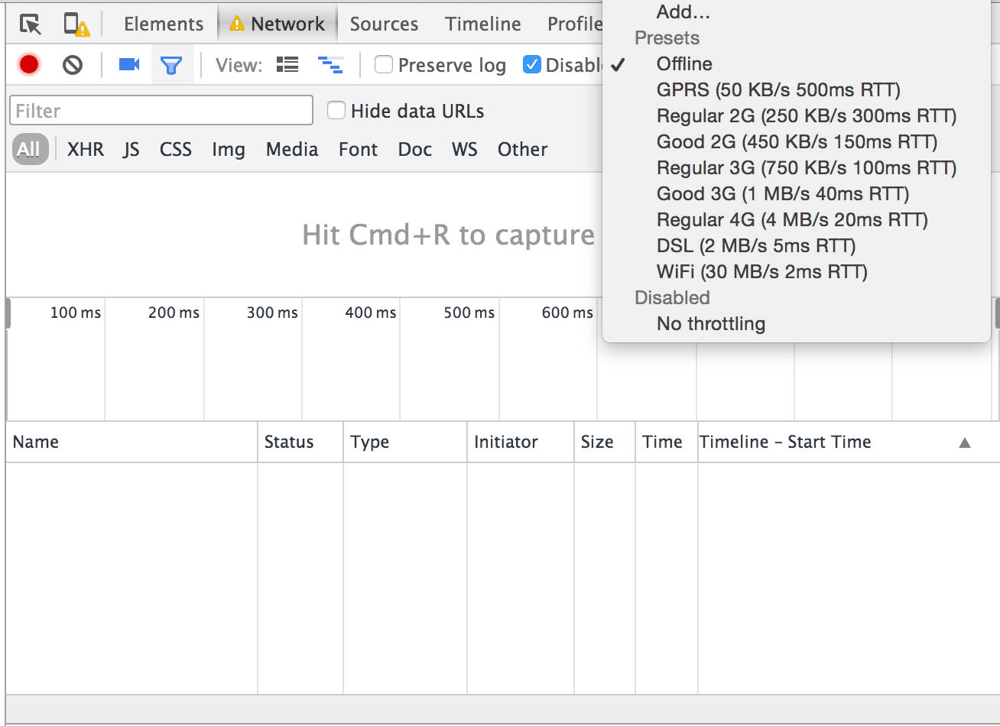

04-cached-response
Step 1: Store JSON from XHR
- Open the
script.js file for editing.
- Do an XHR for
"http://www.reddit.com/r/aww.json"
-
Save the result of the XHR into a key named
"redditData".
Make sure the object you are storing is the JSON string.
Not the JS Object.
Step 2: retrieve response
- Do a
localStorage.getItem('redditData') and parse it into a JS Object.
Step 3: pull from cache
The idea is that now if you are offline you can still access the last set of data retrieved
-
When you run your script. Check if there is an error fetching the data.
If there is an error, instead of pulling from reddit.com, pull the cached data from localStorage.
Hint: Use jQuery's $.get and deferred.fail.
-
Emulate an offline mode in Chrome Dev Tools to test.
You can find it on the top-right side of the Network tab.
It defaults to "No throttling".

Congrats! You're familiar with localStorage now!
Don't forget to turn off offline mode in Chrome Dev Tools! ;)